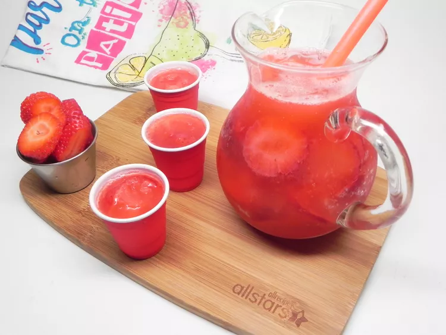

Strawberry slush recipe

This is a delicious vodka slush served with lemon-flavored soda.
This can be served at parties while the rest are drinking beer!
Ingredients
- 9 cups water
- 2 (10 ounce) cans frozen strawberry daiquiri mixer
- 2 cups white sugar
- 2 cups vodka
- 1 (12 fluid ounce) can frozen orange juice concentrate
- 2 (10 ounce) packages frozen strawberries, thawed
- 4 liters lemon-lime flavored carbonated beverage
steps
- Bring a large pot of water and sugar to boil. Cool. Stir in daiquiri mix, vodka, orange juice and strawberries. Transfer mixture to a freezer-safe container, and freeze until mixture is to your desired consistency.
- To serve: Pour into a chilled glass, approximately 2/3 cup of the slush mixture and 1/3 cup of lemon-lime soda. Delicious.